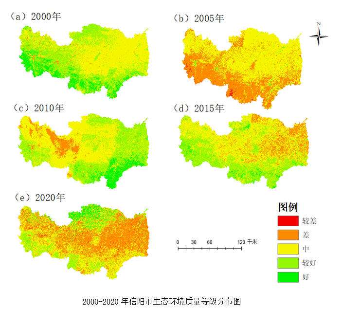
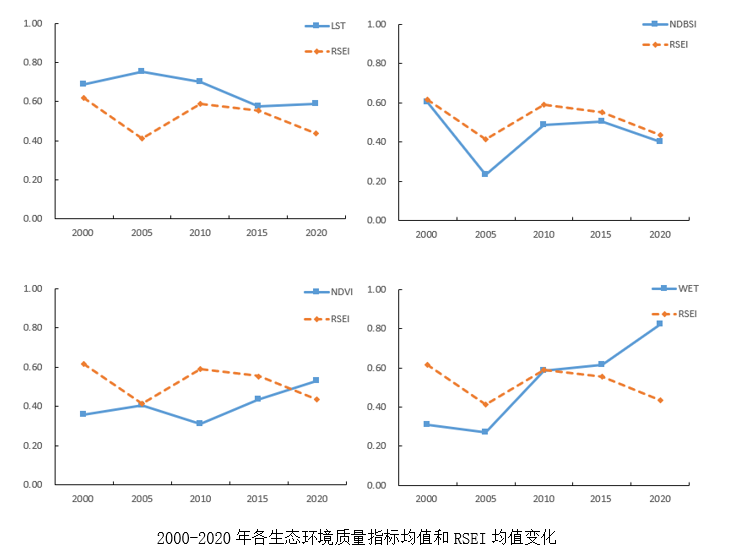
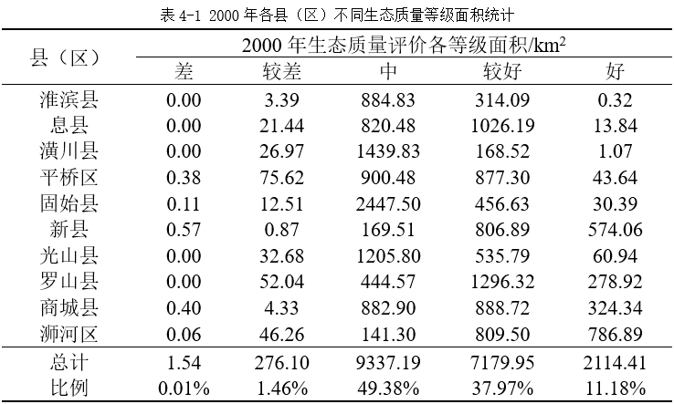
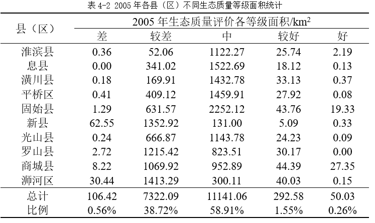
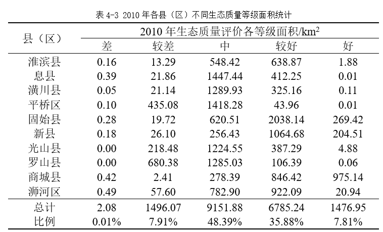
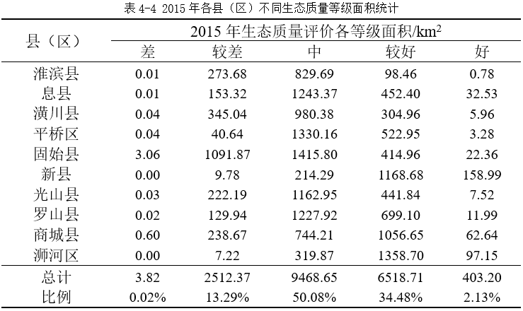
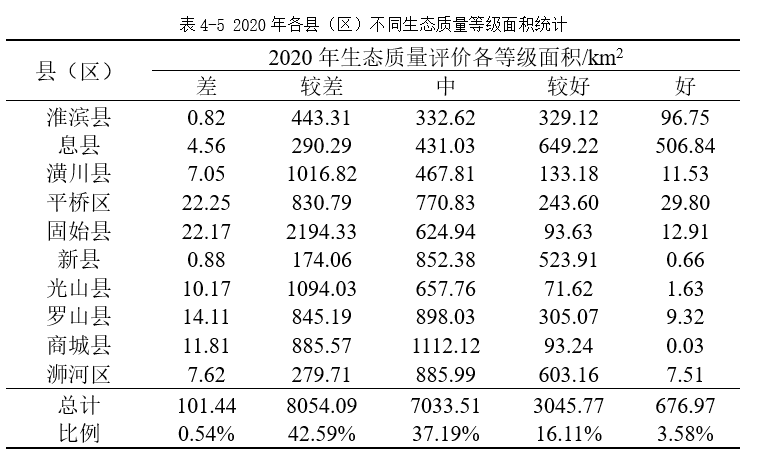
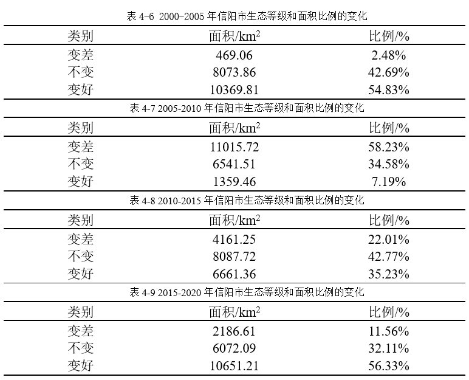

| 1.信阳市生态环境质量整体分析 | 依相关学者研究结果，将遥感生态指数划分为差（0~0.2）、较差（0.2~0.4）、中（0.4~0.6）、较好（0.6~0.8）、好（0.8~1.0）五个等级。将获得的RSEI指数按上述标准分级后得到以下分布图：   结合图1、图2可分析出信阳市生态环境质量趋势为先恶化后好转再恶化，其中以2005年生态环境质量最低，较2000年生态环境质量下降33%；以2000年生态环境质量最高。由图2可得代表生态状况好转的NDVI与WET指标均呈上升趋势，而代表生态状况恶化的LST指标呈先上升后下降的趋势，NDBSI呈先下降后上升再下降的趋势。 |
| 2.信阳市各县（区）生态环境质量评价 | 为全面了解信阳市的生态环境状况，对2000-2020年处理获得的生态环境质量等级分布数据按照县（区）进行划分，如下表所示：



 由表4-1、4-2、4-3、4-4、4-5可得：2000-2015年信阳市生态质量评价等级总体以中等为主，该等级下对应的面积占比分别为49.38%、58.91%、48.39%、50.08%；2020年信阳市生态质量评价等级则以较好为主，该等级对应的面积占比达到42.59%。2000年以浉河区和新县的生态状况最好，最好等级面积分别占比44.11%和36.99%；以淮滨县和潢川县的生态状况最差，差等等级面积分别占比0.03%和0.07%。2005年总体生态状况恶化状态以浉河区、罗山县、新县为主，差等等级面积占比分别为79.22%、58.66%和87.18%。2010年总体生态状况有所好转，其中商城县的生态状况最好，最好等级面积占比达46.37%；以罗山县和平桥区的生态状况最差，差等等级面积分别占比32.84%和22.93%。2015年以浉河区和新县的生态状况最好，最好等级面积占比达10.25%和5.45%；以固始县和淮滨县的生态状况最差，差等等级占比分别为37.04%和22.76%。2020年较2015年继续恶化，以息县和淮滨县的生态状况最好，最好等级面积占比分别为26.93%和8.04%；以固始县和潢川县的生态状况最差，差等等级面积占比分别为74.44%和62.14%。 |
| 信阳市生态环境质量动态监测 | 基于图4-1所得生态质量等级分布重新将其进行划分，等级分别为变差、不变、变好三类，结果如下表所示： 由表4-6、4-7、4-8、4-9可得：2000-2005年总体生态环境在好转，变好的生态等级面积达10369.81km2，比例达54.83%；2005-2010年总体生态环境在恶化，变差的生态等级面积达58.23%；2010-2015年总体的生态环境恶化速度较前放缓，好转面积6661.36km2，比例达35.23%；2015-2020年总体的生态环境恶化较前年加重，仍恶化面积达2186.61km2，比例达11.56%。 |